EDUMAP – NỀN TẢNG BẢN ĐỒ HỌC TẬP TRI THỨC
Báo cáo Phân tích và Thiết kế Hệ thống Thông tin (Chương 1 – Chương 3)
Thông Tin Đề Tài & Nhóm
Đặc Trưng Nền Tảng Đã Thiết Kế
Mục tiêu Báo cáo & Khối lượng Công việc Hoàn thành
Chuẩn hóa quy trình từ Khảo sát Hiện trạng đến Mô hình hóa Hướng đối tượng chuẩn UML 2.5
Khảo sát Hiện trạng & Nghiệp vụ
- Khảo sát 3 quy trình thủ công (AS-IS) tại địa phương
- Phân loại 4 nhóm vấn đề cốt lõi (Nghiệp vụ & Công nghệ)
- Bóc tách 6 Tác nhân (Actors) và 4 Thực thể Miền theo OOAD
- Xây dựng bảng đối so sánh AS-IS vs TO-BE khẳng định giá trị số hóa
Phân tích & Thiết kế Kiến trúc
- Chuẩn hóa 19 Ca sử dụng (Use Cases) trên 6 phân hệ cốt lõi
- Thiết kế Kiến trúc C4 Container Mức 2 và phân hệ NestJS/FastAPI
- Mô hình hóa CSDL Không gian 85 Thực thể theo 7 Bounded Contexts
- Xây dựng 6 Sơ đồ Tuần tự, 2 Máy Trạng thái & Hạ tầng Kubernetes
Mô hình Hướng đối tượng (OOP)
- Thiết kế Sơ đồ Lớp nghiệp vụ tổng thể (Domain Class Diagram)
- Đặc tả chi tiết 28 Lớp Đối tượng (Thuộc tính & Phương thức)
- Ma trận hóa 30 Mối quan hệ Hướng đối tượng chuẩn UML 2.5
- Bảo đảm đầy đủ tính kế thừa, bao đóng, đa hình và toàn vẹn dữ liệu
Bối cảnh Thực tiễn & Vấn đề Phân mảnh Dữ liệu
Thực trạng tra cứu thông tin giáo dục tại Đồng Nai và tính cấp thiết của giải pháp EduMap
Thực trạng Tồn đọng tại Địa phương
- Dữ liệu giáo dục phân tán: Thông tin trường học, học phí, điểm chuẩn phân mảnh trên các file Word, Excel tĩnh.
- Rào cản tra cứu người học: Học sinh chuyển cấp, phụ huynh khó tìm kiếm cơ sở giáo dục, điểm tự học, Wi-Fi công cộng.
- Mạng xã hội thiếu kiểm chứng: Dễ nhầm lẫn với các địa điểm tự tạo trên Google Maps, đánh giá phiến diện.
- Lãng phí nguồn lực tài trợ: Cơ hội học bổng và việc làm thực tập khó tiếp cận đúng học sinh, sinh viên cần hỗ trợ.
4 Rào cản Cốt lõi Nhóm đã Xác định
- Vấn đề Công nghệ: Thiếu CSDL không gian tập trung và bản đồ tương tác GIS chuyên ngành giáo dục.
- Vấn đề Nghiệp vụ: Quy trình tổng hợp báo cáo qua email mất nhiều tuần lễ, dữ liệu nhanh chóng lỗi thời.
- Vấn đề Tiếp cận: Học sinh vùng ven (Long Khánh, Xuân Lộc, Định Quán...) chịu thiệt thòi thông tin so với trung tâm.
- Vấn đề Hướng nghiệp: Thiếu kênh kết nối trực tiếp 1-1 với Cố vấn (Mentors) và chuyên gia đi trước.
Phân tích 3 Quy trình Nghiệp vụ Thủ công Hiện tại (AS-IS)
Kết quả điều tra hiện trạng xử lý quy trình tại các đơn vị giáo dục tỉnh Đồng Nai (Bảng 1)
| Tiêu chí Khảo sát | Quy trình 1: Thu thập Dữ liệu Trường học | Quy trình 2: Phân bổ Học bổng / Tuyển dụng | Quy trình 3: Tra cứu Tiện ích Giáo dục |
|---|---|---|---|
| Thao tác thực tế | Sở gửi công văn -> Trường điền Excel -> Gộp file thủ công -> Xuất PDF | Doanh nghiệp gửi công văn -> Duyệt giấy tờ -> Dán bảng tin trường -> Nộp hồ sơ giấy | Tải file PDF đọc danh sách -> Tự gõ Google Maps ước đoán vị trí -> Hỏi nhóm Facebook |
| Chủ thể thực hiện | Phòng Kế hoạch - Tài chính, Chuyên viên Sở | Phòng CTSV, Đoàn thanh niên, Doanh nghiệp | Học sinh, Sinh viên, Phụ huynh (Người dùng cuối) |
| Tần suất & Chu kỳ | Định kỳ hàng năm (đầu năm học) hoặc theo quý | Không cố định, phụ thuộc thời điểm tài trợ | Liên tục 24/7, cao điểm mùa tuyển sinh (T5 - T8) |
| Hạn chế cốt lõi | Chậm trễ, dễ sai sót dữ liệu, thiếu tọa độ GPS | Thông tin lan tỏa hẹp, nộp hồ sơ giấy rườm rà | Mất thời gian, thiếu bản đồ trực quan, dễ gặp tin giả |
| Đầu ra hiện tại | File PDF danh sách tĩnh, không thể tương tác | Thông báo giấy dán tường; hồ sơ ứng viên giấy | Tìm kiếm mò mẫm, không có bán kính lân cận |
Bóc tách Đối tượng theo Tư duy OOAD (Actors & Entities)
Áp dụng phương pháp luận Hướng đối tượng bóc tách 6 Tác nhân & 4 Thực thể Miền (Bảng 4 & 5)
6 Tác nhân Hệ thống (System Actors)
- Administrator: Quản trị viên Sở/Hệ thống, phân quyền RBAC và cấu hình toàn tỉnh.
- Moderator: Cán bộ kiểm duyệt nội dung bài viết cộng đồng và xử lý phản ánh vi phạm.
- School Representative: Đại diện cơ sở đào tạo quản lý hồ sơ tuyển sinh và cơ sở vật chất.
- Student / Citizen: Người học, phụ huynh tra cứu GIS, hỏi đáp AI, đặt lịch Mentor, nộp hồ sơ.
- Donor / Employer: Doanh nghiệp, nhà tài trợ đăng học bổng, tin tuyển dụng và bán tài liệu.
- Data Collector Service: Tác nhân ngầm tự động thu thập dữ liệu mở GIS và nạp vector.
4 Thực thể Nghiệp vụ Miền (Domain Entities)
- POI (Point of Interest): Thực thể không gian cốt lõi (Kinh độ, Vĩ độ, Địa chỉ, Danh mục, Đánh giá).
- Educational Resource: Thực thể học liệu số, giáo trình, khóa học trực tuyến kèm bản quyền.
- Opportunity: Cơ hội học bổng và việc làm thực tập kèm điều kiện xét tuyển, thời hạn nộp.
- UserProfile: Hồ sơ đa vai trò (Student, Mentor, Business) lưu trữ GPA, kỹ năng, lịch sử giao dịch.
- Ánh xạ thành công: Cả 6 nhóm đối tượng được ánh xạ trọn vẹn vào 6 phân hệ phần mềm EduMap.
Đối so sánh AS-IS vs TO-BE & Đề xuất Kiến trúc EduMap
Khẳng định bước chuyển đổi số toàn diện từ thủ công sang nền tảng số thông minh (Bảng 13)
| Khía cạnh Khảo sát | Hiện trạng Thủ công (AS-IS) | Nền tảng Số Đề xuất EduMap (TO-BE) | Lợi ích Đột phá |
|---|---|---|---|
| Hình thức dữ liệu | Phân mảnh trên nhiều file Word, Excel, văn bản giấy | Tập trung trong CSDL không gian PostgreSQL 16 + PostGIS | Dữ liệu chuẩn hóa, truy xuất tức thì |
| Trải nghiệm tra cứu | Tải file PDF đọc danh sách chữ; tự ước lượng vị trí | Bản đồ số tương tác GIS, tìm theo bán kính GPS (ST_DWithin) | Trực quan, chính xác đến từng mét |
| Cập nhật số liệu | Thu thập định kỳ theo quý/năm; phụ thuộc gộp file | Crawler tự động hóa + Cập nhật thời gian thực qua Web/App | Dữ liệu luôn tươi mới (Real-time) |
| Kết nối cơ hội | Dán bảng tin giấy hoặc đăng lẻ tẻ trên website trường | Sàng lọc học bổng bằng AI, nộp hồ sơ trực tuyến | Cơ hội đến đúng học sinh khó khăn |
| Hỗ trợ tư vấn | Gọi điện thoại giờ hành chính hoặc hỏi nhóm mạng xã hội | Trợ lý ảo RAG AI Chatbot 24/7 + Kết nối Mentor 1-1 | Giải đáp tức thì, định hướng chuẩn xác |
Phân tích Yêu cầu Chức năng & Sơ đồ Ca Sử Dụng (19 UCs)
Chuẩn hóa 19 Ca sử dụng cốt lõi trên 6 phân hệ và đặc tả chi tiết 6 ca trọng tâm (Hình 2.1 & Bảng 2.1)
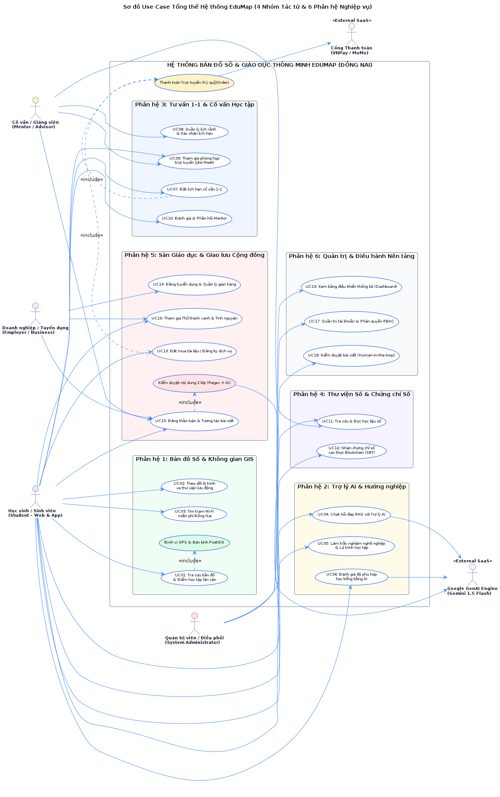
🔍 Phóng to19 Ca Sử Dụng trên 6 Phân Hệ
- Bản đồ & GIS (MOD-MAP): UC01 Tra cứu GIS lân cận; UC02 Xe thư viện; UC03 Trạm Wi-Fi.
- Trợ lý AI (MOD-AI): UC04 Chat RAG hỏi đáp; UC05 Trắc nghiệm lộ trình; UC06 AI khớp học bổng.
- Cố vấn (MOD-MENTOR): UC07 Đặt lịch hẹn 1-1; UC08 Quản lý lịch rảnh; UC09 Jitsi Meet; UC10 Review.
- Sàn Giáo dục (MOD-COMMERCE): UC11 Học liệu mở; UC12 Chứng chỉ số; UC13 Mua tài liệu; UC14 Gian hàng.
- Cộng đồng (MOD-COMMUNITY): UC15 Thảo luận & Bài viết; UC16 Thử thách xanh.
- Quản trị (MOD-ADMIN): UC17 Phân quyền RBAC; UC18 Kiểm duyệt vi phạm; UC19 Dashboard.
Nghiên cứu & Ma trận Đánh giá Lựa chọn Stack Công nghệ
Luận cứ khoa học và cơ sở kỹ thuật khi lựa chọn các công nghệ hiện đại cho EduMap (Bảng 2.8)
| Thành phần Hệ thống | Công nghệ Lựa chọn | Vai trò trong EduMap | Ưu điểm Vượt trội & Luận cứ Kỹ thuật |
|---|---|---|---|
| Frontend Web | Next.js 14 (App Router) | Web Portal & Admin | Tối ưu hóa SEO vượt bậc qua SSR/SSG, tải trang nhanh qua React Server Components |
| Mobile Application | React Native (Expo SDK 50) | Ứng dụng Di động | 1 Codebase đa nền tảng iOS/Android, tích hợp mượt cảm biến GPS và SQLite Offline cache |
| Backend Core API | NestJS (TypeScript) | Xử lý Nghiệp vụ & API | Kiến trúc Module hóa chuẩn DDD, Dependency Injection mạnh mẽ, Type-safety toàn diện |
| AI Microservice | FastAPI (Python 3.11) | Vi dịch vụ AI & RAG | Async ASGI hiệu năng cao, tích hợp mượt mà LangChain, HuggingFace và Google GenAI |
| Database Chính | PostgreSQL 16 + PostGIS | CSDL Quan hệ & GIS | Hỗ trợ ACID, chỉ mục GiST không gian cực nhanh, xử lý dữ liệu GeoJSON và JSONB linh hoạt |
| Vector Database | ChromaDB / pgvector | CSDL Vector RAG | Lưu trữ vector nhúng, hỗ trợ tìm kiếm ngữ nghĩa Cosine Similarity cho Chatbot tuyển sinh |
| Cache & Queue | Redis 7 + BullMQ | Bộ nhớ đệm & Hàng đợi | Độ trễ < 1ms, Rate Limiting chống DDoS và hàng đợi xử lý ngầm duyệt bài viết, gửi email |
| Container & Hạ tầng | Docker & Kubernetes | Đóng gói & Điều phối | Tự động co giãn Horizontal Pod Autoscaling (HPA), tự phục hồi Self-healing trên cụm K8s |
Thiết kế Kiến trúc Tổng thể Hệ thống C4 Container Diagram
Mô hình kiến trúc phân tầng Mức 2 (Container Level) đảm bảo khả năng mở rộng độc lập (Hình 2.2)
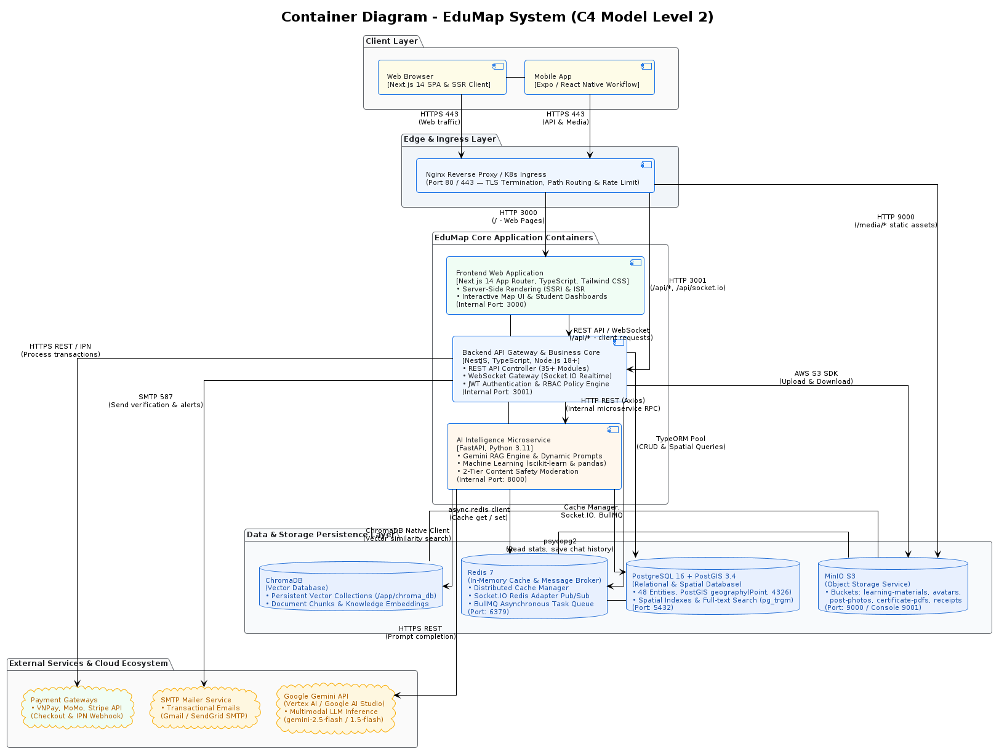
🔍 Phóng to4 Tầng Phân Tách Rõ Rệt
- Client Layer: Web Portal (Next.js 14), Mobile App (React Native/Expo) và Admin Dashboard.
- Gateway Layer: NGINX Ingress Controller mã hóa SSL/TLS, Rate Limiting và định tuyến API.
- Services Layer: Core Backend (NestJS API) + AI Service (FastAPI RAG) + Data Collector.
- Storage Layer: PostgreSQL 16 (PostGIS), Redis 7 (Cache/Queue), MinIO (S3 Object Storage).
Thiết kế Chi tiết Backend NestJS & Vi dịch vụ AI FastAPI
Kiến trúc mô-đun hóa độc lập và quy trình RAG suy luận tri thức với Gemini 1.5 Flash (Hình 2.3 & 2.4)
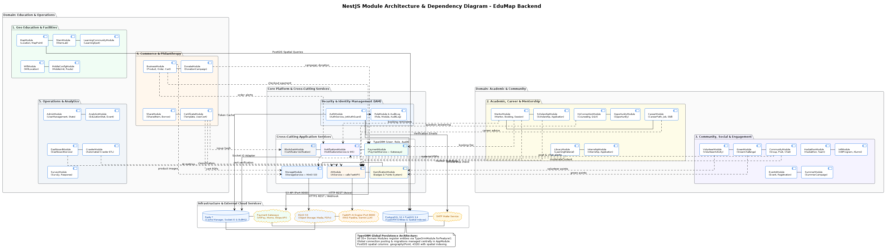
🔍 Phóng to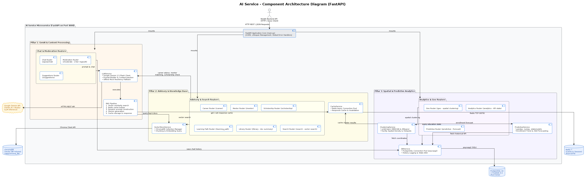
🔍 Phóng toThiết kế Ứng dụng Di động & Pipeline Thu thập Dữ liệu GIS
Kiến trúc Mobile App đa tầng và đường ống tự động hóa Geocoding - Vectorization (Hình 2.5 & 2.6)
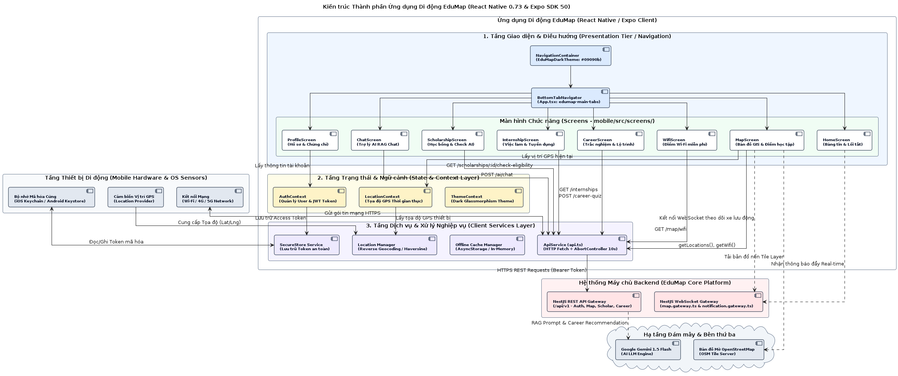
🔍 Phóng to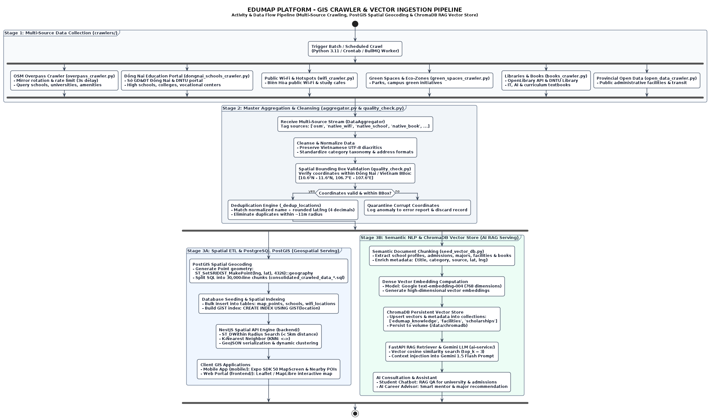
🔍 Phóng toThiết kế CSDL Toàn diện & 7 Bounded Contexts (ERD 85 Thực thể)
Mô hình CSDL quan hệ chuẩn 3NF tích hợp không gian GIS và Vector Search (Hình 2.7)
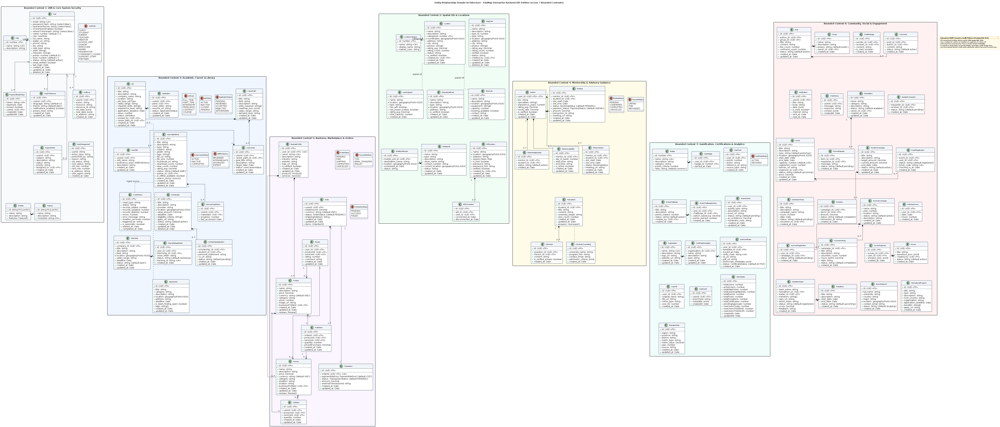
🔍 Phóng to toàn màn hìnhThiết kế Luồng Động (Seq 1 & 2): Xác thực RBAC & Trợ lý Ảo RAG
Mô hình hóa chuỗi tương tác bảo mật hệ thống và xử lý suy luận hỏi đáp AI (Hình 2.8 & 2.9)
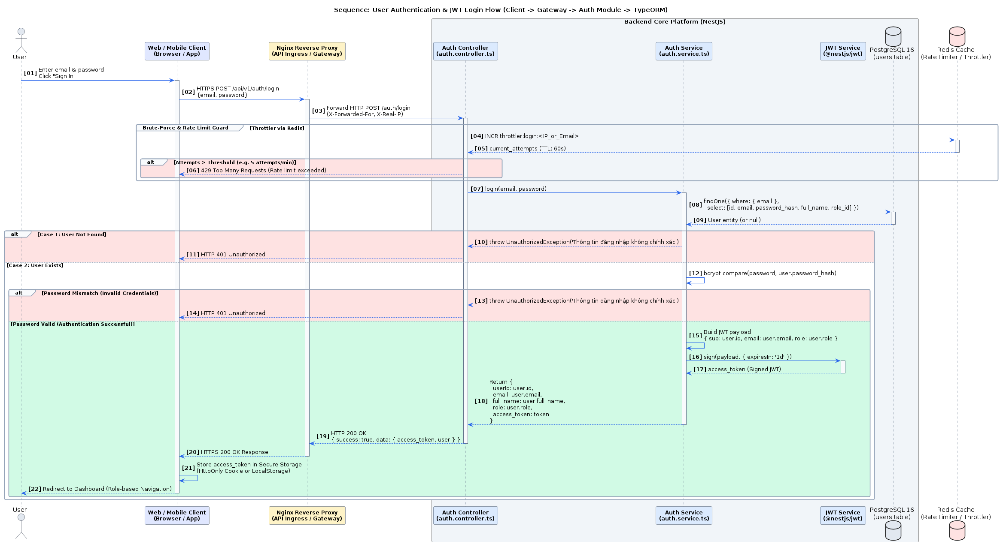
🔍 Phóng to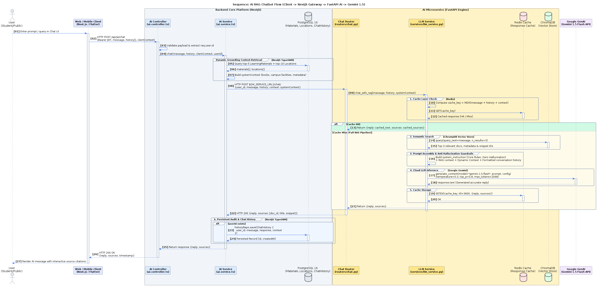
🔍 Phóng toThiết kế Luồng Động (Seq 3 & 4): Kiểm duyệt 2 Tầng & Thanh toán 2 Pha
Kiểm soát an toàn nội dung cộng đồng và giao dịch thương mại bảo đảm chuẩn ACID (Hình 2.10 & 2.11)
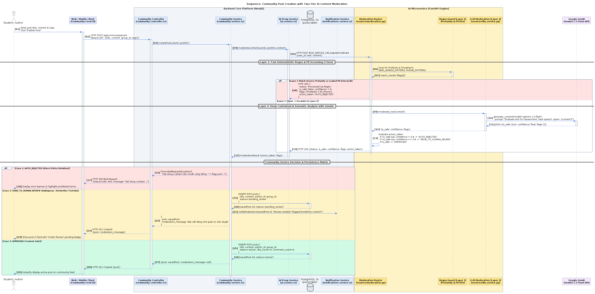
🔍 Phóng to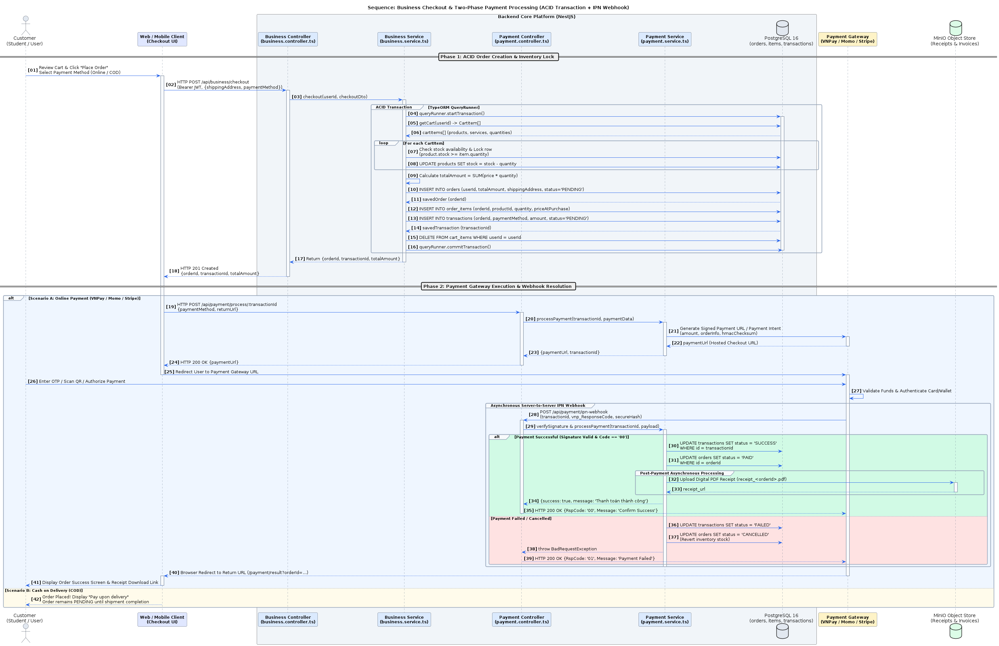
🔍 Phóng toThiết kế Luồng Động (Seq 5 & 6): Cố vấn Jitsi & Nộp Học bổng
Cơ chế khóa giữ chỗ ký quỹ Escrow và quy trình tự động hóa thẩm định học bổng (Hình 2.12 & 2.13)
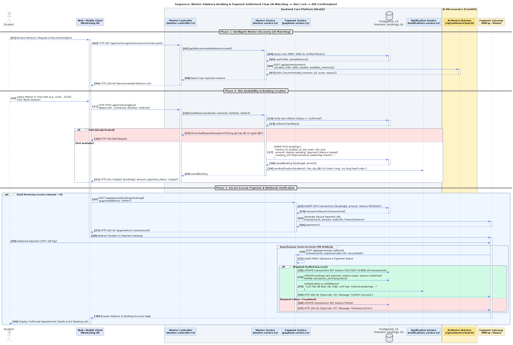
🔍 Phóng to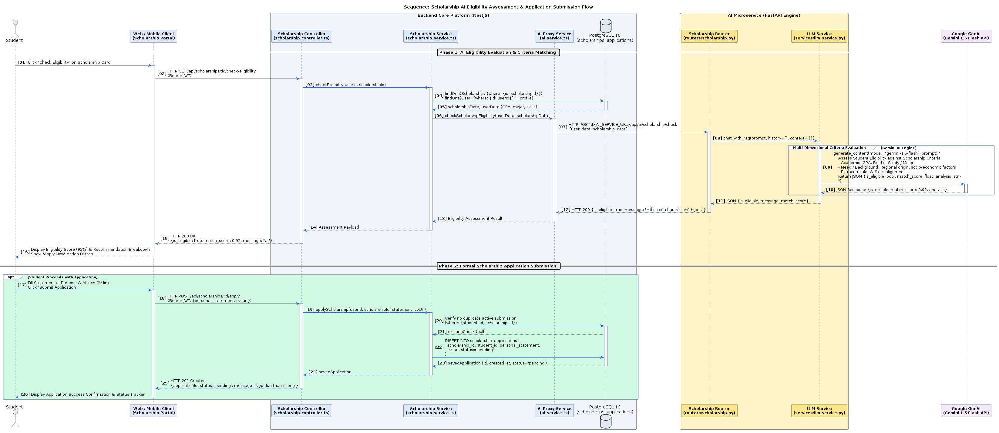
🔍 Phóng toThiết kế Máy Trạng thái: Đơn hàng & Lịch hẹn Tư vấn 1-1
Kiểm soát chặt chẽ toàn bộ vòng đời đối tượng và điều kiện chuyển trạng thái (Hình 2.14 & 2.15)
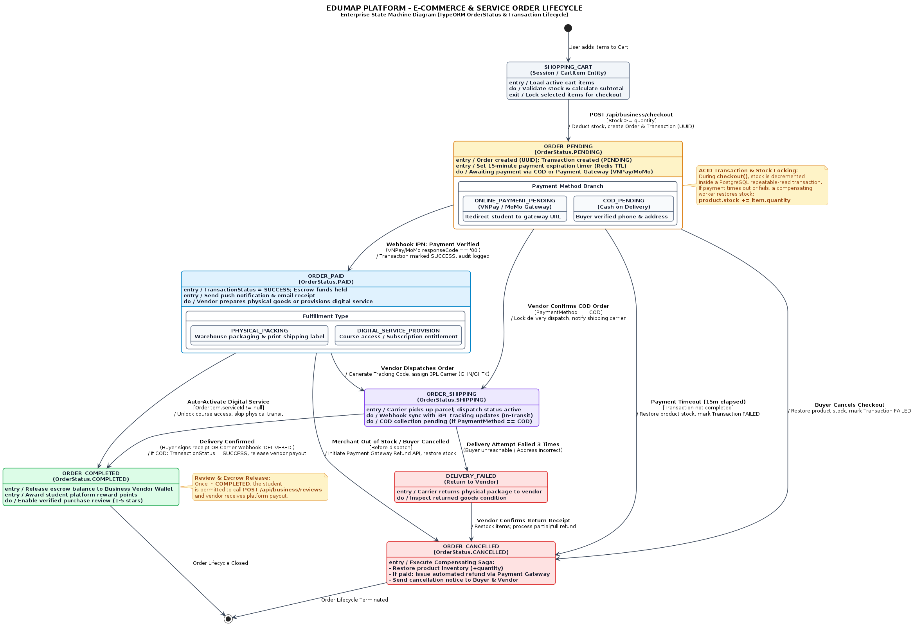
🔍 Phóng to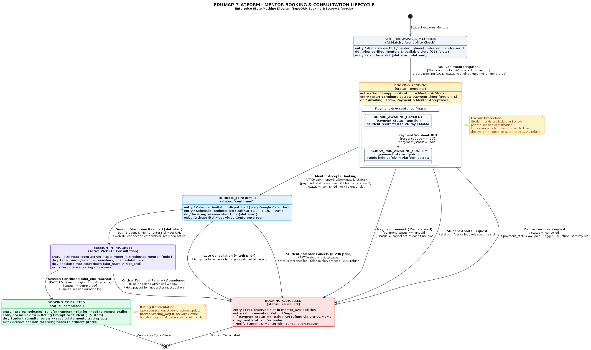
🔍 Phóng toThiết kế Triển khai Cụm Kubernetes Sản xuất (edumap-prod)
Mô hình triển khai container hóa đạt chuẩn Production-ready đảm bảo High Availability (Hình 2.16)
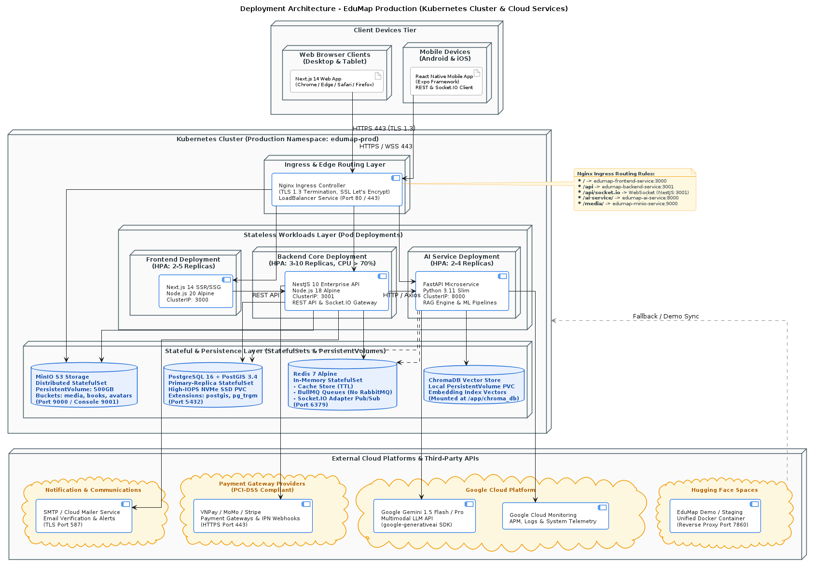
🔍 Phóng toHạ Tầng edumap-prod
- Ingress L7: NGINX Ingress Controller cân bằng tải, quản lý chứng chỉ SSL tự động.
- Backend Deployment: 3 Replicas NestJS, gắn HPA tự co giãn từ 3 đến 10 Pods khi CPU > 70%.
- AI Deployment: 2 Replicas FastAPI tối ưu hóa suy luận song song.
- Frontend Deployment: 2 Replicas Next.js Web Portal.
- Persistence: StatefulSet PostgreSQL & MinIO gắn PVC riêng biệt.
- Giám sát: Prometheus thu thập Metrics và Grafana Dashboard 24/7.
Tổng quan Sơ đồ Lớp Nghiệp vụ Toàn Hệ thống (Domain Class)
Chuẩn hóa 28 Lớp Đối tượng trên 5 phân hệ theo Tiêu chuẩn OOAD - UML 2.5 (Hình 3.1 & Mục 3.1)
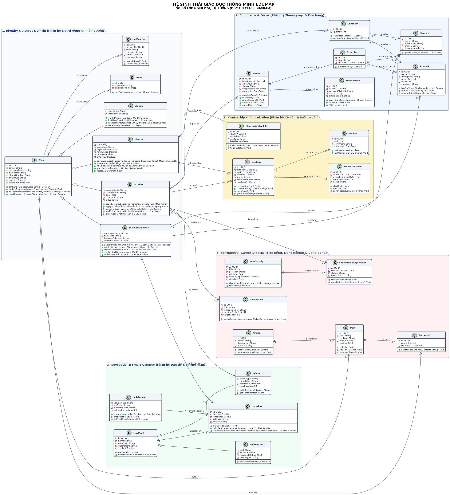
🔍 Phóng to28 Lớp Đối Tượng / 5 Phân Hệ
- 1. Quản trị & Phân quyền (7 lớp): User (Abstract), Student, Mentor, BusinessPartner, Admin, Role, Notification.
- 2. Bản đồ & Không gian (5 lớp): Location, MapPoint, School, WifiHotspot, MobileUnit.
- 3. Cố vấn & Lịch hẹn (4 lớp): MentorAvailability, Booking, MentorSession, Review.
- 4. Thương mại & Dịch vụ (6 lớp): Product, Service, CartItem, Order, OrderItem, Transaction.
- 5. Học bổng & Cộng đồng (6 lớp): Scholarship, ScholarshipApplication, CareerPath, Group, Post, Comment.
- Cấu trúc hộp 3 ngăn UML đầy đủ Thuộc tính, Kiểu dữ liệu và Phương thức.
Đặc tả Chi tiết 28 Lớp & Ma trận 30 Mối Quan hệ OOP
Minh chứng chiều sâu phân tích OOP: Kế thừa, Hợp thành, Thu nạp và Bản số quan hệ (Bảng 3.1 & 3.2)
Các Mối Quan Hệ OOP Nổi Bật (30 Quan Hệ)
- Kế thừa (Inheritance): User -> Student, Mentor, BusinessPartner, Admin (Tái sử dụng logic xác thực); MapPoint -> School, WifiHotspot, MobileUnit (Đa hình không gian GIS).
- Hợp thành (Composition - Kim cương đặc): Order *-> OrderItem (Chi tiết phụ thuộc hoàn toàn vòng đời đơn hàng); Post *-> Comment (Bình luận xóa theo bài viết).
- Thu nạp (Aggregation - Kim cương rỗng): Group o-> User; Product o-> CartItem (Tồn tại độc lập vòng đời).
- Kết hợp (Association): Booking <-> MentorSession; User <-> Notification.
Đặc tả Phương thức Nghiệp vụ & Ma trận
- Student: searchNearbyLocations(radiusKm), applyScholarship(id), bookMentor(id, slot), enrollCareerPath(id).
- Mentor: setAvailability(slots), acceptBooking(id), startSession(id).
- Order: calculateTotal(), applyDiscount(code), processPayment(method).
- Scholarship: evaluateEligibility(studentGpa, criteria), closeApplication().
- Ma trận Bảng 3.2: Quy chuẩn 100% Cardinality Multiplicity (1..1, 1..*, 0..*) giữa toàn bộ 28 lớp đối tượng.
Tổng kết Những Gì Đã Làm Được & Sẵn sàng Triển khai
Thành quả toàn diện từ Chương 1 đến 3 khẳng định tính khả thi vượt trội của dự án EduMap
KẾT LUẬN & ĐỊNH HƯỚNG HIỆN THỰC HÓA HỆ THỐNG
- Khảo sát hiện trạng chuẩn xác, bóc tách thực tế bài toán phân mảnh dữ liệu giáo dục tỉnh Đồng Nai.
- Chuẩn hóa 19 Ca sử dụng (Use Cases) và thiết kế CSDL 85 thực thể trên 7 Bounded Contexts.
- Mô hình hóa 6 luồng động Sequence Diagrams, 2 State Machines và cụm hạ tầng Kubernetes sản xuất.
- Hoàn thiện Sơ đồ Lớp 28 đối tượng chuẩn UML 2.5 và ma trận 30 mối quan hệ hướng đối tượng chặt chẽ.
LỜI CẢM ƠN & PHẦN HỎI ĐÁP (Q&A)
Trường Đại học Công nghệ Đồng Nai (DNTU) – Khoa Công nghệ Thông tin
CHÂN THÀNH CẢM ƠN QUÝ THẦY CÔ VÀ HỘI ĐỒNG!
Đề tài: EduMap – Nền tảng Bản đồ Học tập Tri thức (Đồng Nai)